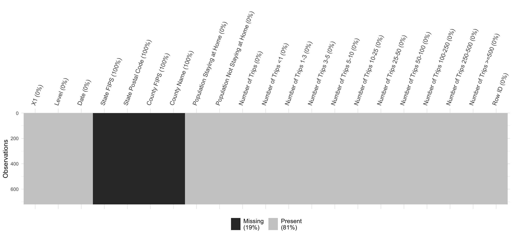
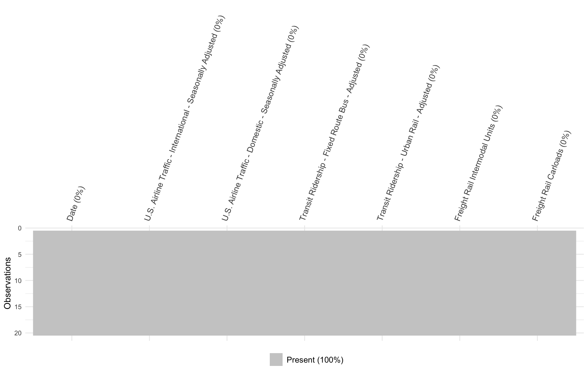

Chapter 4 Missing values
In this section, we present graphs using visdat package (visdat) to visual the missing patterns of our data sets. We present missing-value visualizations corresponding to each dataset to help readers to have a comprehensive impression on all the data sets.
4.1 Dataset1: Trips by distance
As described in section 2, this data set is about the number of trips by distance. Below we show the missing data visualizations. According to the label, the black area indicates the missing value in the data set.

The plot shows that all the data for column StateFIPS, State Postal Code, County FIPS and County Name are missing. However, in our project, we do not use these columns hence we can directly omit these columns in our following analysis. For other columns, there are no missing values.
4.2 Dataset 2: Transportation data
Similarly, we present the missing value plot for transportation data. Since the dataset contains 137 columns, to better display the result, we only select the columns that are used in our project. The time interval that is between 2019-05-01 to 2020-12-31.

The above graph shows that there are no missing values in the data set.
4.3 Dataset 3: COVID-19 statistics
Below is the graph for the missing data situation for COVID-19 data set.
The graph shows that there are missing values in the FIPS, Recovered, Active, Lat, Long_, Incident_Rate, and Case_fatility_ratio have missing values. However, we only used the Confirmed and Deaths columns in the data hence we can omit these columns for our analysis.